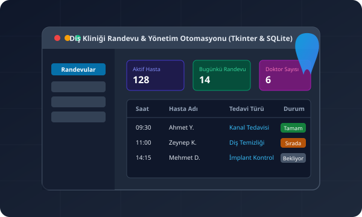

Python / Tkinter / SQLiteDiş Kliniği Randevu ve Yönetim Sistemi
Klinik süreçlerini dijitalleştirmek amacıyla Python ve Tkinter GUI kütüphanesi ile geliştirilmiş; SQLite3 veritabanı destekli hasta, doktor ve randevu takip otomasyonu.
- Hasta kayıt, tedavi geçmişi ve randevu takvim modülü
- SQLite3 ile ACID uyumlu ilişkisel veri mimarisi
Python
Tkinter
SQLite3
Masaüstü GUI